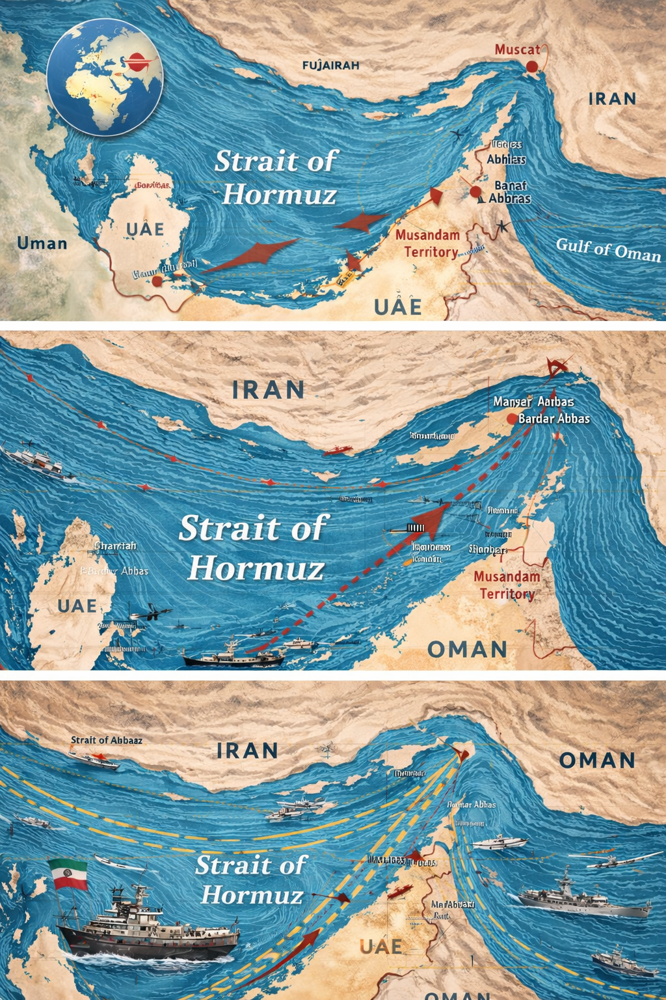

Nos últimos dias, o Estreito de Ormuz tem sido palco de tensões e conflitos entre o Irã e outras potências internacionais. Esse estreito é uma rota estratégica, pois cerca de 20% de todo o petróleo mundial passa por ele diariamente, sendo vital para o comércio global de energia.
Países como Israel e Estados Unidos, que já tinham histórico de tensões com o Irã, intensificaram confrontos recentes. Cada lado apresenta suas justificativas: Israel aponta motivos religiosos e de segurança, enquanto os EUA citam preocupações com o desenvolvimento nuclear iraniano.
Outros países, como China e Índia, preferiram adotar a diplomacia e a negociação, tentando evitar envolvimento direto nos conflitos. Apesar disso, a instabilidade na região acaba se espalhando, afetando navios comerciais e mercados internacionais.
No contexto brasileiro, essa crise também tem impactos econômicos. Entre os países com maiores reservas de petróleo, a Venezuela ocupa o primeiro lugar, enquanto o Brasil é o 15º. Apesar de produzir petróleo suficiente, o país ainda depende da importação de derivados, como gasolina e diesel, porque não possui refinarias capazes de processar toda a produção interna.
Essa dependência faz com que o preço dos combustíveis no Brasil seja mais elevado, especialmente em períodos de alta internacional, como agora. Além disso, cidades do país enfrentam desabastecimento local, agravado por greves de caminhoneiros e pelo aumento do valor do diesel.
A situação política interna do Brasil, marcada por polarização entre grupos de esquerda, direita e outros setores, torna a resolução dos problemas ainda mais complexa. Apesar disso, há esperança de que negociações internacionais e medidas diplomáticas possam reduzir a tensão no Estreito de Ormuz, garantindo a estabilidade do comércio de petróleo e, consequentemente, uma melhora nos preços de combustíveis.
Click aqui
